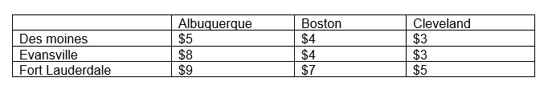
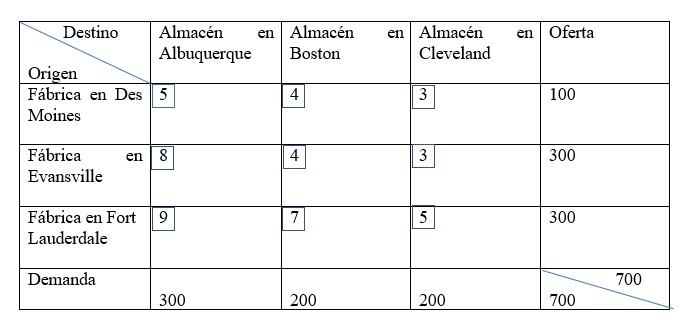
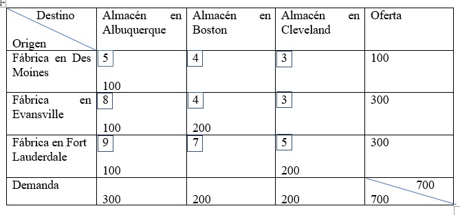
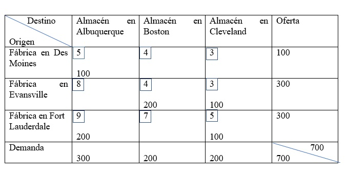

Cuando los datos han sido dispuestos en forma tabular, se debe establecer una solución factible inicial para el problema. Un procedimiento sistemático, conocido como la regla de la esquina noroeste, requiere que se parta de la celda superior izquierda (o esquina noroeste) de la tabla y se asignen unidades a las rutas de envío como sigue:
1. Agotar la oferta (capacidad de la fábrica) en cada fila antes de descender a la fila siguiente.
2. Agotar los requerimientos (almacén) de cada columna antes de continuar hacia la derecha a la siguiente columna.
3. Comprobar que todas las ofertas y demandas se satisfagan.
Ejemplo:
En esta tabla se presentan los costos de transporte de Executive Furniture Corp.

Elaboración propia
Tabla de transporte de la Executive Furniture Corp.

Elaboración propia
Utilizando el método de la esquina noroeste:
Ya se puede utilizar la regla de la esquina noroeste para encontrar una solución inicial factible para este problema. En este ejemplo es necesario cubrir cinco veces el procedimiento anterior para hacer las asignaciones de envío iniciales:
1.- Comenzando en la esquina superior izquierda, se asignan 100 unidades de Des Moines a Albuquerque. Esta cantidad consume la capacidad u oferta de la fábrica de Des Moines. Sin embargo, a Albuquerque aún le faltan 200 escritorios. Se desciende a la segunda fila en la misma columna.
2.- Se asignan 200 unidades de Evansville a Alburquerque. Esta cantidad satisface la demanda de Albuquerque de un total de 300 escritorios. A la fábrica de Evansville le quedan 100 unidades, por lo que se prosigue hacia la derecha, hasta la siguiente columna de la segunda fila.
3.- Se asignan 100 unidades de Evansville a Boston. La oferta de Evansville ya se agotó, pero al almacén de Boston aún le faltan 100 escritorios. En este punto se desciende verticalmente en la columna Boston a la fila siguiente.
4.- Se asignan 100 unidades de Fort Lauderdale a Boston. Este envío satisfará la demanda de Boston de un total de 200 unidades. Se observa, sin embargo, que la fábrica de Fort Lauderdale aún tiene 200 unidades disponibles que todavía no ha enviado.
5.- Se asignan 200 unidades de Fort Lauderdale a Cleveland. Este movimiento final satisface la demanda de Cleveland y agota la oferta de Fort Lauderdale. Esto sucede siempre con un problema balanceado. El programa inicial de envíos ya está completo.
El costo de esta asignación de envío es fácil de calcular:
CX = (100 X $5) + (200X8) + (100X4) + (100 X 7) + (200 X 5) = $4,200
Esta solución es factible puesto que todas las restricciones de oferta y demanda se satisfacen. Sin embargo, tendríamos mucha suerte si esta solución señalara el costo de transporte óptimo del problema, porque este método de carga de rutas ignora por completo los costos de envío por cada una de las rutas.
Luego de que se encuentra la solución inicial, debe ser evaluada para ver si es óptima. Se calcula un índice de mejora por cada celda vacía con el método de salto de piedra en piedra. Si estos procedimientos indican que es posible una mejor solución, se utiliza el trayecto de salto de piedra en piedra para ir de esta solución a soluciones mejoradas hasta que se encuentre una que sea óptima.
El método de salto de piedra en piedra es una técnica iterativa para pasar de una solución factible inicial a una factible óptima. Para utilizar este método se debe observar una regla sobre el número de rutas de envío utilizadas. El número de rutas ocupadas (o cuadros) siempre debe ser igual a la suma del número de filas más el número de columnas menos uno. En el problema anterior la solución inicial debe tener 3+3-1 = 5 cuadros utilizados. Por lo tanto:
Rutas de envío ocupadas (cuadros) = número de filas + número de columnas menos 1
Cuando el número de rutas ocupadas es menor que éste, la solución se llama degenerada.
¿Cómo funciona el método de salto de piedra en piedra? Su forma de abordar el problema es evaluar la eficacia en cuanto a costo del envío de mercancías por rutas de transportación que actualmente no se encuentran en la solución. Cada ruta de envío no utilizado de la tabla de transporte se prueba mediante la siguiente pregunta: ¿Qué les sucedería a los costos de envío si una unidad del producto tentativamente fuera enviada por una ruta no utilizada?
Índice para Fort Lauderdale – Albuquerque = +9-7+4-8 = -2
Como este último índice de mejora es negativo, se puede ahorrar en los costos si se utiliza la ruta Fort Lauderdale – Albuquerque.
En consecuencia, el siguiente paso es enviar el número máximo permisible de unidades por la nueva ruta. ¿Cuál es la máxima cantidad que puede ser enviada por la ruta que ahorra dinero? Esta cantidad se encuentra remitiéndose al trayecto cerrado de signos más y signos menos trazado para la ruta y seleccionando el número más pequeño que se encuentre en esos cuadros que contienen signos menos. Para obtener una nueva solución, se agrega ese número a todos los cuadros del trayecto cerrado con signos más y se resta de los cuadros del trayecto con signos menos. Todos los demás cuadros permanecen iguales.
La cantidad máxima que puede ser enviada por la ruta Fort Lauderdale – Albuquerque es 100 unidades.
La nueva solución se muestra en la siguiente tabla:

Elaboración propia
Esta solución puede o no ser óptima. Para determinar si es posible una mejora más, se regresa a realizar el método de salto de piedra en piedra.
D a B = 4-5+8-4 = +3
D a C = 3-5+9-5 = +2
E a C = +3-8+9-5 =-1
F a B = +7-4+8-9 = 2
Por consiguiente, se puede observar un índice de mejora mediante el envío del número máximo permisible de unidades de E a C.
Se envían 100 unidades por la nueva ruta, quedando la nueva solución de la siguiente manera:
CX = 100 X 5 + 200X4 + 100 X3 +200 X 9 + 100 X 5 = $3,900

Elaboración propia
La tabla mostrada contiene las asignaciones de envío óptimas, porque cada índice de mejora que se puede calcular en este momento es mayor que o igual a cero, como se muestra en las siguientes ecuaciones:
D a B = 4-5+9-5+3-4 = +2
D a C = +3-5+9-5 = +2
E a A = +8-9+5-3 = +1
F a B = +7-5+3-4 = +1
Si todos los índices de mejora son no negativos; la solución óptima ha sido encontrada
Solución óptima:
CX = 100 X 5 + 200X4 + 100 X3 +200 X 9 + 100 X 5 = $3,900 [11].